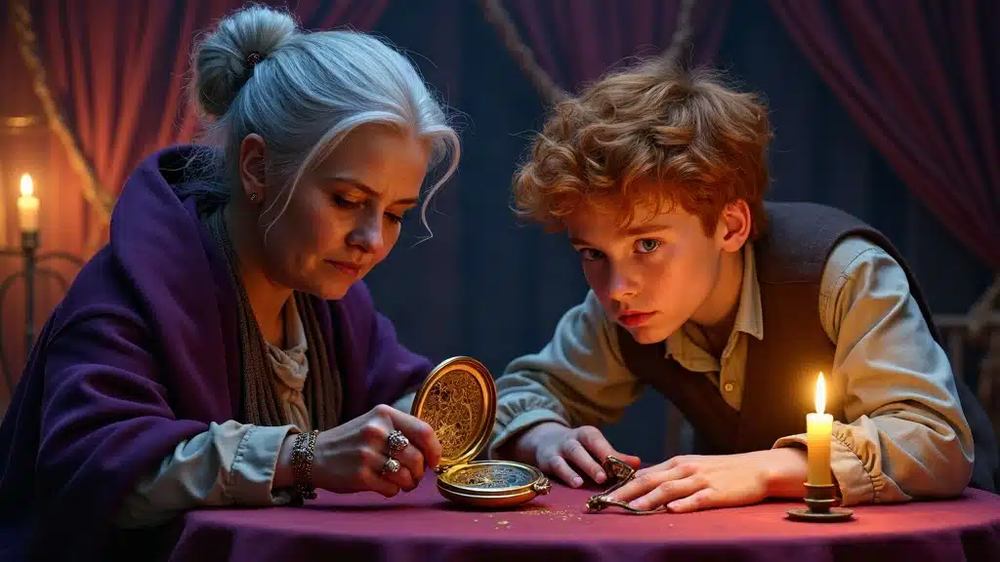
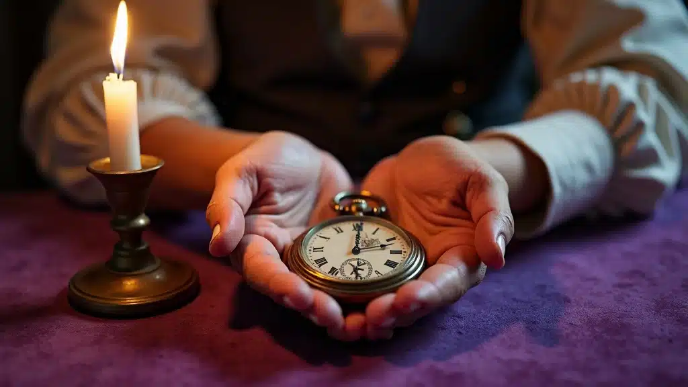
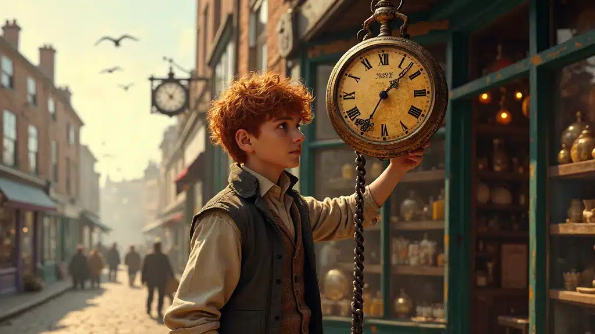

The Clockwork Seer: A Steampunk Short Story
Updated 2026-11-08
An original short story from the Clockwork collection. About an eight-minute read.
From the same workshop: the Clockwork Seer appears on a tee in the tarot series, and the witchy & tarot collection has the rest of the deck.
I. The Broken Seer
The fair came to Whitby every September, and every September it brought Madame Ottoline.
Her tent stood at the far end of the field, past the steam carousel and the man who ate fire, a dark purple canvas with a single brass lantern by the door. The sign above it read only: The Clockwork Seer. Your future, by the minute.
Thomas Hesketh was seventeen and had never once had his future told. He had no money for it and, being apprenticed to a watchmaker, no patience for it either. Futures were for people who did not understand how things worked. Thomas understood how things worked. Everything was springs and gears, if you looked closely enough.
So he was not pleased when old Mr. Pemberton sent him across the fairground with a leather tool roll under his arm.
"The Seer’s watch has stopped," Pemberton said. "She’ll pay double if it’s running by sundown. Don’t touch anything else in that tent, and don’t let her read you."
"Why not?"
The old man looked at him over his spectacles. "Because she’s good at it."
II. The Watch
Inside, the tent smelled of candle smoke and oranges. Madame Ottoline was smaller than Thomas had imagined, with silver hair pinned high and fingers covered in rings. She did not look up when he came in.
"You’re the boy from Pemberton’s."
"Yes, ma’am."
"Sit."
On the velvet table between them lay the watch.
Thomas had repaired perhaps three hundred watches in his life, and he had never seen one like it. It was a pocket watch the size of a saucer, in dark brass worn smooth at the edges. The case back had been cut away and replaced with glass, so the whole movement was visible: wheels within wheels, a balance spring as fine as hair. But it was the dial that made him stare. There were no numbers on it. In their place were twelve tiny engraved images: a tower, a wheel, a star, a moon, a lantern, a pair of scales, a heart, a sun, a skull, a key, a crown and an eye.
The hands had stopped between the wheel and the star.
"It was my grandmother’s," Madame Ottoline said. "She read futures in Prague with it. My mother read them in Vienna. I read them here, in the rain." She pushed it towards him. "It stopped on Tuesday. I have not told a fortune since."
"You don’t need the watch to tell fortunes, surely," Thomas said, before he could stop himself.
She looked at him for the first time. Her eyes were very pale, almost grey.
"Fix it," she said, "and we shall see."
III. The Mechanism

He worked at the edge of her table by lantern light while the fair roared outside.
The fault was simple, in the end: a cracked jewel bearing on the fourth wheel, so worn the arbor had slipped out of true. He replaced it with one from his roll, cleaned the train, oiled the pivots and wound the mainspring a quarter turn.
The balance wheel shivered, then began to swing.
But while he worked, he had noticed something else. Beneath the main movement, tucked behind the dial, was a second mechanism he did not recognise. A small cam, shaped like a snail shell, connected to the hands by a long lever and a tiny ratchet. It did not seem to do anything at all.
"What’s this part for?" he asked.
"That," said Madame Ottoline, "is the part that tells the future."
Thomas laughed. He did not mean to. She did not seem offended.
"Show me, then," he said.
IV. The Reading

She took the watch from him, closed the case, and placed it face up between them.
"Wind it once," she said. "Then hold it, and ask your question silently."
Feeling foolish, Thomas turned the crown once and held the watch in both hands. It was warm from the lantern. He thought of the only question he really had, the one he never said aloud: Will I ever make something of my own?
He opened his hands.
The hands of the watch had moved. Not ticked, moved, sweeping across the dial and stopping, quite precisely, on the key.
"The key," said Madame Ottoline softly. "Something locked will open for you. Not this year. Soon."
Thomas looked down at the watch, then up at her. Then, because he was who he was, he opened the case back and looked inside.
The snail cam had turned. When he wound the crown, the ratchet had released, and the cam had swung the hands to a position set by how long and how hard he had wound. A slow, nervous hand landed on one image. A quick, confident hand on another. It was not magic. It was a mechanism that measured him.
"It’s a trick," he said.
"Of course it’s a trick," she agreed. "So is a clock. A clock does not know what time it is, Thomas. It only knows how far its spring has unwound. People decided that meant something." She smiled. "The watch does not see the future. It sees the hand that winds it. I see the rest."
"Then what did you see?"
She reached across the table and turned his hands over, palms up. They were stained with oil and nicked with small cuts from files and saws.
"I see a boy who fixed in two hours what three watchmakers in Leeds could not fix in a year," she said. "I see a boy who looked inside the watch when anyone else would have looked at the dial. People like that do not stay apprentices. That is all. That is the whole fortune."
V. The Key

She paid Pemberton double, as promised. Thomas walked back across the fairground in the dark with the coins in his pocket and the strange snail cam turning over in his mind.
He did not see her again that year. The fair packed up and rolled south, as it always did.
But the next September, when the fair came back to Whitby, a boy from the purple tent came to Pemberton’s shop with a parcel addressed to T. Hesketh, Watchmaker. Not apprentice. Watchmaker.
Inside, wrapped in a silk scarf, was the watch. With it was a card in a careful, looping hand:
My eyes are tired, and the rain has won. I am going home to Vienna. The Seer is yours now. Wind it gently. Look inside. And remember: the future is not read. It is wound.
Beneath the card, folded small, was a deed for an empty shop on Church Street with a key taped to it.
Thomas Hesketh opened his own workshop there the following spring. Over the door he hung a brass sign of his own design, a watch dial with twelve small pictures where the numbers should be.
He wore the old Seer on a chain around his neck for the rest of his life, close to the heart, glass side out, so that anyone who asked could see the gears.
And when people asked him whether it really told the future, he would smile, and wind it once, and hand it over.
"Ask your question," he would say. "Then look inside."
About this story
The Clockwork Seer is an original short story written for Steamgears. Thomas Hesketh, Madame Ottoline and the watch are fiction. The story belongs to our Clockwork collection, where the mechanism is the art, and inspired our Clockwork Seer designs.
Read our other story, The Clockwork Herbarium.
If the story made you want the look, Start Here is where the pieces are laid out.